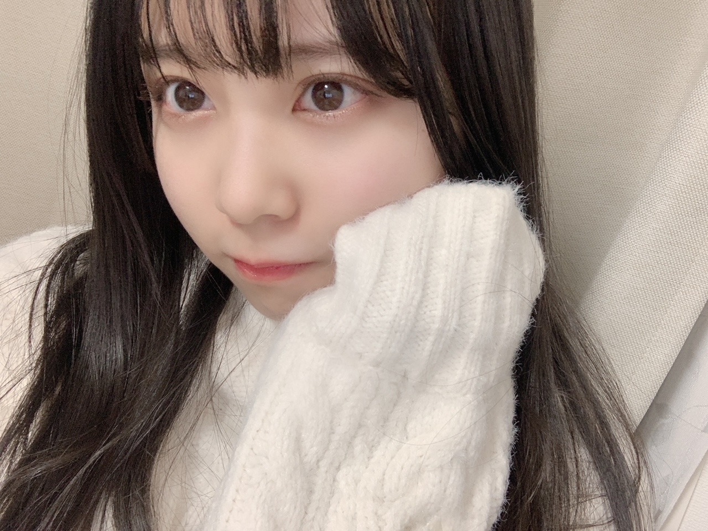
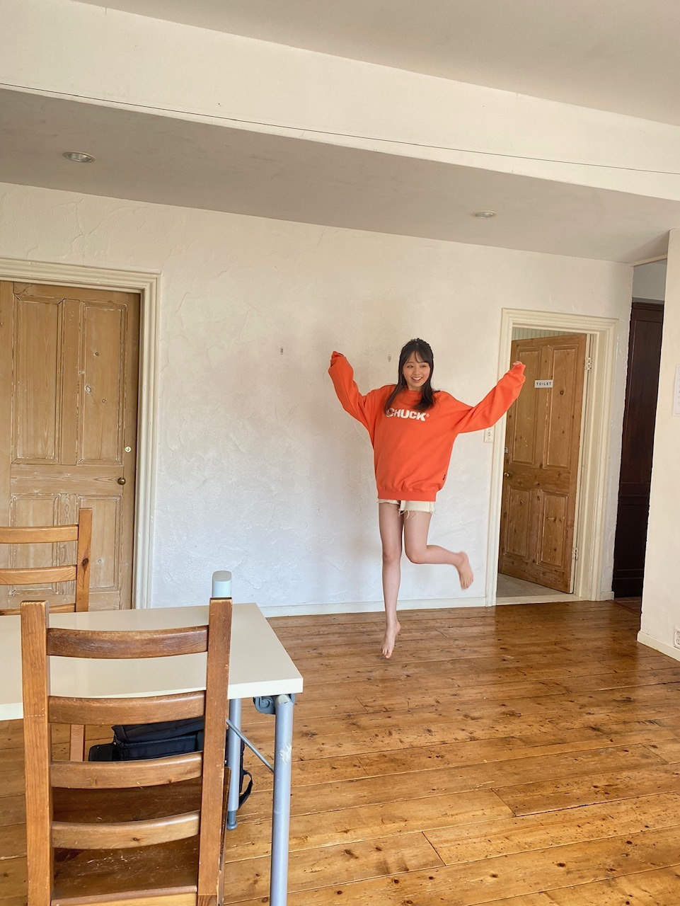

2020/1214Mon真っ白な季節~。佐藤璃果
こんにちは~
乃木坂46 4期生 岩手県出身
佐藤璃果です。

事後報告色々したいと思います！
○12月6日発売、ヤングマガジンさん
新4期生5人で登場させて頂きました。
懐かしの、みんな白い衣装での登場です。
そして、色とりどりのパーカー！
私は何色でしょうか？？？
1年間の締めくくりの季節。
インタビューも少し載っているので
是非チェックしてみてください！
私は林とくろみんと誌面を読みました₍ ᐢ. ̫ .ᐢ ₎
太陽がキラッキラな日でした。
変な右手！

おれんじでしたーー
○12月7日、レコメン！さん
乃木坂四期生メガ盛り祭り！にさやかと、くろみんと私で、出演させて頂きました！
ちゃんと褒められましたかね？
ノリさんがお優しくて、
面白くしてもらいました。
2人のお話も面白かったです。
ありがとうございました！(*^^*)
○12月14日、ノギザカスキッツ
今晩の｢ノギザカスキッツ｣に登場させて
いただきます！照負倶楽部です。
私も恥ずかしくて照れてしまいました。
お恥ずかしいですが、
ドキドキですが、
是非チェックしてみてください。
オリエンタルラジオの藤森慎吾さんも
出演して下さっています！
伊藤理々杏さん、梅澤美波さん、山下美月さん、ゆなちゃんのチャイナドレスも
とっても可愛かったんです！！\(◡̈)/
~~~質問~~~
前々回のブログのコメントから、前回のコメントの質問まで答えていきます︎︎︎︎︎☺︎
○ ミーグリではどんなこと話したいですか？
皆さんの事教えて下さい︎︎☺︎
初めましてトークは勿論ですし、
ライブの話でも、何でも！
アイドルも好きなのでオススメの方教えて下さい︎︎︎︎︎☺︎ドラマも結構見てるので、今季のドラマとか！あとは、可愛い女の子が好きなのでかわいい女の子のお話も！
真面目な相談とか聞くのも好きだし〜、
あっち向いてホイしたいです
色々考えたらポンポン浮かんできちゃった~
○ りかちゃんはもし10万円が自由に使えたら何に使いますか?
大切な人と美味しいご飯を食べに行く。
あとは、美容に使います！
○ 新しく冬服は買いましたか？もし買っていたらお気に入りの1着を見せてください♡
まだ載せていない冬服の写真がないので
レコメン！さんの時の
お洋服で許して下さい( Ꙭ)
白いニットワンピース~！
○ 受験勉強がほんとに大変で良ければ応援してください(；；)(；；)
本当に大変なんですね、、お疲れ様です
偉いです！
毎日良い1日になりますよう願います。
○ 質問では無いですが、お仕事で初めての作業をしてて毎日バタバタです。良ければ元気下さい
慣れない仕事って大変ですよね( ˙º˙ )
お疲れ様です！
○ 4期生ライブで印象に残ったことは??
感動しすぎて言葉にできない
ユニットはもちろんですし、、
寺田さんのポジションをやらせて頂けて
嬉しかったです！！
○ ライブの裏話何かあれば教えて！？
これはもう、ゆなちゃんも言っていて
私も言いたかったんですが、
｢ポピパッパパー｣からの｢ありがちな恋愛｣
のステージ移動です。
結構遠くて。
曲終わりから曲初めに間に合うように、
カメラに見切れた瞬間猛ダッシュしました。
多分、人生で1番のダッシュを記録しました、
ギリギリ間に合っていましたよね？笑
私、50m走11秒もしくは12秒なんですよ。
リハでも猛ダッシュして間に合ったので、本番も足遅い私の概念を破ってダッシュしました
○ ミーグリで緊張した時はどうすればいいですか？
深呼吸してニコニコしましょう笑
○バスケやったことありますか？？
授業でしかないです、、
○もうすぐクリスマスだね！サンタさんは何歳まで信じてた？？
小学生ぐらいまでかなぁ( ˙º˙ )
○ 最近の瑠璃はどんな感じですか？
カップルの2年目( Ꙭ)!!
○ ライブで起こったハプニングあった？
リハで階段から落ちそうになりました
○夜、テレビをつけたまま寝ちゃうことはありますか？
夜は静かじゃないと寝れないので、
ありません！
○ 璃果ちゃんが考える瑠璃色の果実ってなに？
食べられない宝石
○ 璃果ちゃんの愛が止まりません。どうすればいいですか？
照れますね(*¨*)
話しに来てください！！
○ さつま芋大好きな璃果ちゃんですが、さつま芋以外で普段から持ち歩いている食べ物はありますか？
アーモンドと、高カカオチョコ
○ 4期生ライブで1番印象に残った曲は何ですか？
僕だけの光
○ マフラーとか手袋とか買うんだけど、りかちゃんはどんなの使ってる？？
白とかチェックとか！
手袋、中学生の頃うさぎの顔が付いたやつ使ってた笑笑
○ りかちゃんがのぎおびで履いてた黒いスカートめっちゃかわいかったからどこで買ったか教えてくださいㅠ_ㅠ
嬉しいです！
最近の｢のぎおび｣かな？
あれはショートパンツなんですよ！
レザーの。
レトロガールさんで買いました。
○ 寿司打はやっぱり得意ですか？
懐かしい！！めっちゃやってました。
今はどうかな、前はだいぶ得してたんですけど、、
○ かまくらに入った事ありますか？
お家のお庭で作っていました！
岩手県でも初雪が降ったようで、実家から
雪の写真が送られてきました(*ˊ꒳ˋ*)
○ 大学や大学院で数学を専門分野として勉強している人はどんな印象ですか？
かっこいい！！
無知ですけど、どんな分野勉強しているか聞いてみたいです！
○ ついついやってしまう癖ってある？
挙動不審
○ プライベートでは何色のリップを使うことが多いですか？
コーラル系か、赤です。
○タイトルにマフラーと書いてあるけれど、今年もうマフラーは着けましたか？
昨日と一昨日、つけました。
○璃果ちゃんが冬に欠かせないものって何ですか？？
ハンドクリームです。
新しいハンドクリーム買いましたよ~
○ ミート＆グリートで4期生ライブの感想だったりを沢山伝えてもいいですか...？
もちろんです
ミーグリ取ってくれたんですかぁー？
ありがとうございます！！
今回のコメントミーグリのお話が多くて、
皆さんも楽しみにして下さっているんだなぁって思えてとても嬉しいです。
ミーグリでたくさん会いに来てくれる
皆さんありがとう！！！
コメントしてくれて本当に嬉しいです。
φ(._. )ﾒﾓﾒﾓ
私も楽しみです( ˙º˙ )♡
3次は
2020年12月17日（木）14:00 ～
2020年12月18日（金）14:00 まで
http://www.nogizaka46.com/smph/news/2020/12/-4626th.php
待ってますね~
~~~~~~~~~~~~~~~~~
最近人の優しさを
とても感じることがありましてね、
私も困っている人がいたら真っ先に
助けてあげられるような人間になりたいなと思いました。
⸜( •⌄• )⸝
だいぶ長くなったのでここでおしまい！
また今回のブログのコメントに書いて下さったら答えさせて頂きますね！！
明日は~はやしるなぴ
では、
皆さんにとって素敵な一日になりますように
髪切りたい20201214
❁
今日は、さやかから
可愛い可愛いお洋服を沢山貰えて
嬉しい日でした！！❤︎
いつかブログに載せますね！
尊敬している優しい先輩から
半袖のお洋服を頂いたのでそれも載せたかったのですが、また半袖の季節にね(´･_･`)
❁
またね。
#47 りか 47！しぃな！！
コメント(306)
4期生ライブめっちゃ良かったよー！
さゆりんご軍団めっちゃ可愛かった！
ミーグリ行きたいでーす❗️
これからも応援してます！
もう12月も半分終わったね〜
やらなきゃいけないことが多いんよね
お互い頑張ろうぜ！！！！！！
んじゃ、またね！！！！
りっちゃん！
やっほー！
ひろき(Yandji)です☺️
ブログ更新ありがとー！！！
質問タイムー！！！
ファンレター書くんやけど、どんなのがいいかなー？
また、コメントするね！
では、またねー！
ひろき(Yandji)より
色々リカちゃんがメディアの部分とか出てきてくれる日々が落ち着いて若干寂しさを感じております…(笑)
ヤンマガだったりレコメンだったり、しっかりチェックしてるけど、毎回りかちゃんが頑張ってる姿だったりをしっかり見れるので、全部楽しめました！(笑)
レコメンの時の白のニットワンピース？あれめちゃくちゃ可愛らしくて好きだなぁって思ったよ〜！
最近は急に寒くなってきたから、風邪とか引かないように気をつけてね…！乃木坂としての一大イベントがとりあえず一段落したと思うから、しっかり休んでくれたら嬉しいな！
ミーグリできるだけりかちゃんと喋りたいから、頑張りたいなって思うけどほんとに金欠でして(´・ω・｀)
2年間の思いとか色々伝えられるようにとりあえず今からできることも頑張っていくね！！
質問
・りかちゃんが今アイドルなんだなぁって感じた瞬間はありますか？
・4期生ライブ、1番踊ってみて難しい〜！ってなった曲はありますか？
・白のニットワンピース、ヒキの絵で見てみたいです〜！
・今後ユニット組んでみたいメンバーはいますか？
・りかちゃんはアニメとか映画とか何か好きなキャラクターはいますか？
5日後をまた楽しみに待ってるね！
メリアより。
岩手でも雪降ったね！
自分も親から写真送られてきた〜
雪が恋しいね
関東でも雪降るかなー？
土曜日にスーツ屋さんに行ってネクタイ買ったんだ〜
スーツもシャツも黒だから全身黒にしたくてネクタイも黒にしたよ！
黒い生地に青の柄が入っててめっちゃかっこいい！
スーツ屋さんに行くのドキドキした笑
1人で行くの不安だから友達に付いてきてもらおうと思ったけどやっぱ1人で行った笑
店員さんに恐る恐る声掛けて色々見せてもらったんだけど優しい人で良かった〜
仕事柄スーツ着ないしネクタイも結んだことないからネットで調べながらやってみたんだけどめっちゃ苦戦した笑
岩手の成人式､盛岡はオンラインだし北上は中止になったみたいで自分の所は花巻なんだけどちゃんとやれるか心配だな
せっかく準備したからやれるように願う！
早くコロナ落ち着いてほしいね
めっちゃ寒くなってきたから暖かくしてね
次のブログも楽しみにしてるね〜
47回目だね！しぃなちゃんだね！！！！！
レコメンめちゃくちゃ楽しかったです...！
璃果ちゃんはお声も本当に可愛くて大好きなので、すごく癒されたしあっという間でした。
またいろんなラジオで璃果ちゃんのお話が聴きたいな〜！！
ノギザカスキッツも超楽しみです！
チャイナドレスめちゃくちゃ似合ってるし髪型も超可愛いです...
藤森さんとの共演はらじらー以来ですね！
どんな絡みが見れるのかわくわくです
-----------------------------
質問答えてくれてありがとう！！
最近の瑠璃はカップルの2年目みたいなんですね...？もうラブラブを通り越してるってことですか！？気になる！！笑
絵文字もめちゃくちゃ可愛いです
ポピパッパパーからありがちな恋愛までの間猛ダッシュしてたんですね！大変！！
バッチリ間に合ってましたよ〜
｢さっきまで踊ってたのにもう真ん中に居る！璃果ちゃんすごっ！！｣ってなってました！笑
-----------------------------
もうミーグリが楽しみすぎてすでにそわそわしちゃってるんですよ...早すぎますかね
SR審査で璃果ちゃんを推し始めてから2年とちょっと経っていて、もう話したいことが沢山あるんです。
まずは1月31日ですね！待ち遠しい！！！
-----------------------------
質問です！ ↓
・最近｢芋まつば｣っていうお菓子にハマってるんだけど、璃果ちゃんは聞いた事ありますか？
(もしかしたら静岡限定かもしれないです...！)
・ミーグリの時ホワイトボードにメッセージとか書いて見せてもいいですか？
・ヘアセットしてる男子とノーセットの男子どっちが好きですか～？
・璃果ちゃんが特に好きなお花ってありますか？
ぜひ教えてください〜！！
-----------------------------
白ニット璃果ちゃんめちゃくちゃ好きなんです！
本当に似合ってるし雪の妖精みたいで超可愛い...！
それと、公式の生写真とか乃木フェスさんでクリスマス衣装の璃果ちゃんが見れたのですが、もう可愛すぎてやばいです本当に推しです
今回こそは璃果ちゃんを当てられるように頑張りますね〜！！
かなり寒いですが、朝晩冷えないようにたくさん暖まってくださいね！！
次回のブログも楽しみにしてます！
大好きです！！！
あきひろ
質問に答えてくれてありがとう(*´`)♡
「もうすぐクリスマスだね！
サンタさんは何歳まで信じてた？？」
っていう質問したんだけど、
璃果ちゃんは小学生くらいまで
信じてたんだね~！
私もそのくらいかな~( ´ ᐞ ` ).｡o
何がきっかけで事実を知ったかは
覚えてないんだけど
でもだんだん気づくのかな~笑
璃果ちゃんはサンタさんから
どんなものもらってた？？？
┈┈┈┈┈┈┈ ❁ ❁ ❁ ┈┈┈┈┈┈┈┈
オレンジのパーカー可愛い~！！♡♡
すごく似合ってる！(⑉• •⑉)
何色着ても似合うなんて本当羨ましい…
ちょっと気になったんだけど
パーカー着て全身が写ってる写真、
どうやって立ってるの？！！！
足の親指だけで全身支えてない？！笑
見た瞬間どうなってるのか
びっくりしたΣ(ﾟωﾟﾉ)ﾉ笑
┈┈┈┈┈┈┈ ❁ ❁ ❁ ┈┈┈┈┈┈┈┈
みんなミーグリ参加するんだねいいな…( ᵒ̴̶̷᷄꒳ᵒ̴̶̷᷅ )
私は次のシングルのときに参加するね。。
ミーグリじゃなくて個握だったら
申し込んでたのになぁ(´._.`)ｼｭﾝ
いつになるかわからないけど
璃果ちゃんに絶対に会いに行くね~！！
┈┈┈┈┈┈┈ ❁ ❁ ❁ ┈┈┈┈┈┈┈┈
【質問】
・璃果ちゃんのおすすめのハンドクリーム教えて！
・どのくらい髪切りたいの~？？
・さくらちゃんとのエピソードあったら聞きたい！
最近急に寒くなってきたけど
体調管理に気をつけてね:( ;´꒳`;):
またブログ更新待ってるね~❀·°
*⑅୨୧まなみん୨୧⑅*
一枚目のお写真大好き
です。
今年も終わりが近づいて
きましたね。
璃果さんは今年何かやり
残した事はありますか？
来年はやるぞ。
と、いった事など。
ニット帽子はお持ちですか？
被っている所見たいですね:)
璃果さんを
りっぴぃ
と、お呼びしても大丈夫
ですか？
嘘です。
何となく思いつきで言って
見ました。
日が暮れ、暗くなるのが
早くて切なくなります。
この気持ちで遊び心を
持ちたいです。
このような時期におすすめ
の乃木坂46の曲はなんですか？
色々と私も質問してみました。
風邪をひかないように暖かく
してお過ごしくださいね。
私の好きなアイシャドウが
今年中にもう一度見れます
よーに。
ヤンマガゲットしましたー！！
オレンジめっちゃ似合ってた。
オフショのジャンプかわいい笑
実はインタビューとかの方も楽しみなんよね。メンバーの思いを知れるっていうか。
りかちゃんの想いも伝わったよ。
また楽しみにしてます！
レコメンお疲れ様！
りかちゃんがラジオ出るたびに言ってるけどやっぱり、りかちゃんの声好きです。
直接りかちゃんに褒められたい、、
そしたら何でもできそう笑
ぜひりかちゃんにラジオのお仕事を！
今日のスキッツは予告見ただけで、かわいいりかちゃんが見れそうなのでリアタイです。
めっちゃ楽しみ！！
今日はりかちゃんのかわいい写真多すぎて、見るたびに倒れそうになります笑
いっぱいありがとう！！
ではでは体調には気をつけて。
次のブログも待ってます。
いつもありがとう。
別に
部屋を 暖かくして
かわいい半袖の服があるなら
いつでも 掲載して くださいな 笑 。。
かわゆいぞ！
就活やら学校やらでコメントが久しぶりになっちゃったー
なんとか合間縫ってミーグリ参加するね！
ライブの感想とか色々お話しできるの楽しみにしてます！
次のブログ楽しみにしてるね！
アップトゥボーイのグラビア見てから気になってます。
お洋服も可愛かったなあ〜
ミーグリ取るか迷ってます
最近さらに寒くなってきていよいよガチガチの冬到来って感じで身構えております
質問でもしようかな
・1人でできる暇潰しを教えて下さい！
それではまた。
47！しぃな！！
璃果ちゃん♪
ウォウウォウウォ〜♪
コメント、失礼します！
ヤングマガジン、見ましたよ。
めちゃくちゃ可愛かったです。
オレンジ色のパーカーも良く似合ってるね。
インタビューも読んだけど、落ち込む回数を減らせると良いね笑笑
「反省はするけど落ち込みはしないぞ！」という心づもりでいると良いのかも。
レコメンも聴きましたよ。
上手に褒められてたね。
ニットワンピも可愛かったなー。
この後のノギスキも楽しみです！
質問の返事もありがとう！
ミーグリ本当に楽しみだよねー。
昨日、守屋麗奈ちゃんと幸阪茉里乃ちゃんとのミーグリに参加してみたけど、めちゃくちゃ緊張したなぁ笑笑
でもトラブルとかは無かったので、りかちゃんとの時も大丈夫そうです。
伝えたいことは事前に紙に書いておくよ。
それでは、この辺で。
おやすりかちゃんー
全て消灯して、外からの明かりで眠ります。
人工的な白い光が苦手なんです。
話したいことメモしてたくさんお話しできたらいいなと思います！楽しみー
ミーグリだけど話するの楽しみ。でも身体に気をつけてね。応援しているよ。
僕も岩手県出身でいつか乃木坂46に岩手県出身の方がメンバーになってくれるのをずっと夢見てました
そして今年とても可愛らしい璃果ちゃんが入ってきてくれました。とても嬉しいです！
もっと岩手県のこと発信してほしいので岩手県のことについて質問です！
「岩手県が舞台の『ゴーガイ！』ご存知ですか？もし初耳ならとてもオススメですので読んでみてください」
ことが〜♪
好きだ〜♪
個人的な感想だけど..
今くらいの 長さ いいと思いますよ
夏場 暑くなったら.. まあ 多少 短めでも 笑
日々の楽しみです！
頑張ってください！
前髪は 少し長くなって
目に入りそうだから 切ってもいいかも 笑
璃果ちゃんブログ更新ありがとう♡♡
もう4期生ライブから1週間以上経つんだね～！
早い早い！！
今週はアンダラがあるね～！！
璃果ちゃんは見ますか？？
私はね、なんと会場で見れることになったんです！！久しぶりの会場でのライブ、、！！やっぱり生で見るライブって絶対鳥肌だし、雰囲気もだいぶ違うよね～！ほんとに楽しみ！！
ミーグリで璃果ちゃんがあっち向いてホイやりたいとあったけど、私もやりたい！！！でもオンラインだから時差とか生じちゃうかな？？それも面白そう笑笑
でも私はとりあえず、感謝伝えたいな～！！いつもいつも元気をもらってるしね！！だからミーグリの時は感謝を伝えさせてね～！！ライブの感想も言いたい！！
来年早くなって璃果ちゃんと早くお話したい！！それまではここでのコメント欄で頑張って耐えます！！笑
じゃあまたコメントするね☺︎
あや
オレンジの明るい感じは、元気なりかちゃんに似合いますね！
４期生ライブの裏話も、楽しそうな笑顔の裏で全力疾走してたなんて、笑
ミーグリも、沢山申し込みました！笑
色々なお話し出来るの楽しみです！
次のブログも楽しみにしてますね！
お疲れ様です。
先週のレコメン！面白かった。
聴けて嬉しかったよ！
四期生紹介の乃木坂工事中見返した。
新四期生いいね！
またね！
質問 なんて呼ばれるのがいい？
りかた〜ん♪
ブログ更新ありがとうございます
ヤングマガジンさんみましたよ
太陽がキラッキラな日に太陽みたいな色のパーカーむちゃくちゃ似合ってます
むちゃくちゃ可愛いです
インタビューが載ってるページのピースしてるカットむちゃくちゃ好きです
インタビューに書いてあった来年の目標をみて、個握への参加も始まるなかで一緒に見つけられたら嬉しいなぁって思いました。
来年もりかちゃんの姿を見続けさせてもらえることがすごくすごく楽しみです
レコメンで着てた白ニットワンピースむちゃくちゃ可愛くてお団子ヘアーであってるかな？もむちゃくちゃ似合ってて可愛すぎるって思っていましたが、白ニットワンピース×ストレートもむちゃくちゃ可愛すぎますね
ブログに載せてくれる写真での話になりますが、りかちゃんってりかちゃんにむちゃくちゃ似合ってるお洋服たくさんもってるイメージなのでミーグリむちゃくちゃ楽しみです
今朝の満員電車のなかで身動きがとれないなかで体調を悪くされた方がいてその方の近くにいた女性の方の姿は自分からはまったくみえなかったのですが「乗務員さんを呼んでください」って声だけが聞こえてきて、その女性の方は駅に着くまでずっと声をかけ続けてて真っ先に行動できる方の凄さを実感しました
このご時世、マスクをしてても声を出すことでジロジロみられるような状況下のなかで同じような行動ができる自信が今はありませんが、いつか同じような行動ができるようなでっかい人間になりたいなぁって思いました
りかちゃん今日も一日お疲れ様でした
明日も楽しい一日にしましょうね
47、懐かしいですね、しぃなちゃんに今の姿見せたらびっくりするでしょうね。あの時からずっと応援してこれてよかったです！
璃果ちゃんのミーグリちゃんと取ったよ！
今から何を話そうかめっちゃ悩んでます
とりあえずあっち向いてホイはやろうと思います
絶対負けないからね！！
ちゃんとレコメン聞きましたよ！璃果ちゃんの優しい柔らかい声が聴けて耳が幸せでした！
沢山質問返答してくれてありがとう、活動も多くなっているのにちゃんと返信してくれる。
こういうとこに璃果ちゃんのやさしさが溢れ出ていてとても大好きです。そのやさしさがあればどんな人にでも助けることができると思います。
勇気が出なければ動いてみましょう！助けた後は絶対すっきりした気持ちになるから！
またブログ更新を待ってます。「た」でした。
早くミーグリの日にならないかな、、と日々ソワソワしております、、
盛岡も本日かなり雪が積もりまして、朝の道は大パニックでした！
ノギスキ楽しみにしてるね〜
璃果ちゃんが定着しすぎて
しぃなちゃんがもう懐かしいね。
最近寒すぎて寒さに弱い自分は
璃果ちゃんのミーグリを楽しみに毎日生きてます。笑
50m走、11秒〜12秒はヤバいね。
でもそんなところも好き！
また5日後、楽しみにしてるよ〜
めちゃくちゃ可愛い〜〜( ᵒ̴̶̷̥́ _ᵒ̴̶̷̣̥̀ )♡
Q璃果ちゃんは今までショートカットだったことありますか？？1番短かった頃のお写真見てみたいです！♡
これからも応援してます꒰⌯͒•·̫•⌯͒꒱
ブログ更新ありがとう
ぼくは、岩手県民なのでりかちゃんが乃木坂46で活動、活躍してる姿がすごくすごく嬉しいです☺️
岩手県も冬本番になり雪も降ってきたしめちゃめちゃしばれてきたよ
岩手が恋しくなったらいつでも帰ってきて欲しいです❗️
これからも頑張ってください
岩手から応援してます
Q岩手に帰ってきたらまず先になにをしたいですか！？
ショートパンツ？この冬になると懐かし
いやら新鮮やら。でも綺麗な足。
照負倶楽部、チャイナドレスがユニフォ
ームなんですね。少しセクシー感もある
衣装で、デレデレだったんじゃない。
白ニット。可愛いの定番。
今回は、コメントの返信が多くて嬉しかったぁ！自分の質問に対して答えてくれてたりするとめっちゃテンション上がるし、純粋に嬉しいし
ミーグリ全部当たった〜！1/31、2/14の1、2部、それから3/21の5部に参加するよ〜！！今までずっと話せる機会がなかったから、今回話せるチャンスが何回もあると思うと今からめっちゃ楽しみです( ˊ꒳ˋ ) ᐝ
｢何話そうかな〜？｣とか緊張しそうだな〜
｢あっち向いてホイ｣をするとか、って璃果ちゃんがブログで提案してくれたからやってみようかな〜( ´-` ).｡oO
深呼吸して、、ニコニコして、、それ｢あっち向いてホイ！｣ってやっても変にならないかな？笑笑
まずは、笑顔で璃果ちゃんとお話できるように心掛けてみるね
〜質問〜
○洋服とご飯の約束をまゆたんとしたって話してたけど、まゆたんとおでかけするとしたらどこに行きたいですか？？
○レコメンの放送で、櫻坂のゆっかーこと菅井友香ちゃんが｢4期生の子に会えると思ってたから残念だった〜｣って話してたよー！またお会いできる機会があるといいね( ˊᵕˋ )
○璃果ちゃんが前から好きと話していた｢BiSH｣さん、以前から有名な曲など少しは聴いたりしていても、あまり詳しくはなかったのですが、、璃果ちゃんの影響もあって、最近いろんな曲を聴いたり出演されていた番組を観たりしてハマっています。
もしかしたら、前にもブログで答えていたことがあるかもしれないけど、改めてオススメ曲など知りたいです(⑉• •⑉)
○今日、テレビで｢焼き芋カレー｣なるものが特集されてたよ〜！
｢かぼちゃを使ったカレー｣は聞いたことがあったけど、｢焼き芋カレー｣は初知りだった！焼き芋好きな璃果ちゃんは、聞いたことあったりするのかな？
挙動不審。が、めっちゃ受けた。
実は、自分もそうだよ。
またね。
♭47 ひでき
りかちゃんがオレンジなんか新鮮！似合う！
スキッツの予告で叫んだ（ ; ; ）（笑）
チャイナドレスやばすぎ（ ; ; ）（ ; ; ）
めちゃめちゃ楽しみだからリアタイするー！！
5日後の更新楽しみにしてるね⸜( •ᴗ• )⸝またね！だいすき！
優しい想いが繋がってゆくのは素晴らしいですね。
れんれんです。
おれんじ！右手が可愛い笑
ジャンプしてるのかと思ったら、つま先は付いてたのね笑
レコメンも聴けなかったし、ヤンマガも俺の近所で売ってなかった...悲しみ...
唯一家でも出来る今晩のスキッツを楽しみにするよ！☺︎
俺もテレビの前で照負しないように挑戦してみようかな！笑
チャイナドレス似合ってて、話す前に照れそうだけど笑
ミーグリ確かにどんなお話ししたら良いか考えてたから有難いm(_ _)m
あっち向いてホイする？！笑
冬服ねぇ...買おう買おうって思ってて、結局欲しいのが見つからなくて未だにTシャツに上着を着て毎日過ごしてます...(昔の小学生みたい笑)
璃果ちゃん白ニット似合うよね！
俺も白ニット似合うって友達に言われたから似合ってるらしい笑
50m走そんなに遅かったの！？(O_O)
人生で1番の猛ダッシュしたのね笑
深呼吸してニコニコしてたら、多分ニヤニヤに変わってしまう気がする笑(^^;)
「気持ち悪っ！」って思わないでね笑
食べられない宝石か...素敵な答え...
あの黒のショートパンツめっちゃ良いなって思ってた！
レザーなのが良いよね☺︎
ミーグリが楽しみで楽しみで仕方ないよ〜！(^^)
優しいと本当に人を助けれるしいざという時に助けてもらえる事もあるから、本当に優しい人であるべきだと思うよ☺︎
璃果ちゃんは優しくて純粋だから、ちゃんと人に優しさや愛情を持って接せるはずだよ(^^)
また次のブログでね☺︎
璃果ちゃんにとって素敵な日になりますように
俺も髪切り行きたいなーって思ってて明後日美容院行ってくるよ〜！！！切ってパーマかけてみる☺︎☺︎☺︎
お！お洋服楽しみにしてるね！
またね。
Q.璃果ちゃんはお部屋でどんなパジャマ着ますか？モコモコしてるやつ？？
Q.この冬みかんは食べる？またどのぐらい食べた？？
れんれんより
コメントする

PROFILE
新4期生リレー
202104
| SUN | MON | TUE | WED | THU | FRI | SAT |
|---|---|---|---|---|---|---|
| 1 | 2 | 3 | ||||
| 4 | 5 | 6 | 7 | 8 | 9 | 10 |
| 11 | 12 | 13 | 14 | 15 | 16 | 17 |
| 18 | 19 | 20 | 21 | 22 | 23 | 24 |
| 25 | 26 | 27 | 28 | 29 | 30 | |

事後報告もありがとう！新4期生内容めっちゃよかった！おれんじも似合ってる！かわいい！
そして質問のお返事ありがとう！瑠璃色宝石☺︎
また5日間待ってます！冬も本格的になってきたけどお体気をつけてください！